人生第一台新能源车怎么选？开了9年新能源后，我建议先看这5个生活场景
月初看到一份 5 月乘用车销量榜，前20几乎已经被新能源车型占据。
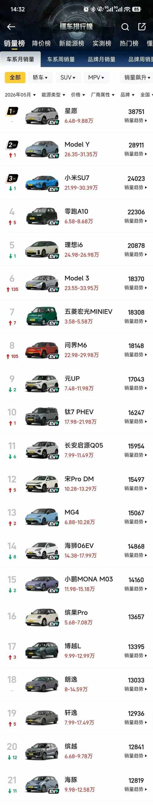
如果把时间往前推几年，“人生第一台车怎么选”这个问题，大概率会得到一些很熟悉的答案：买油车稳，合资车省心，轩逸、卡罗拉、朗逸这类车型闭眼买，新能源保值差、电池贵、不成熟，第一台车别折腾。
这些建议放在以前不是没有道理。 但今天的车市、补能环境、国产新能源的产品力，以及普通家庭的用车习惯，都已经变了。新能源不再只是少数人尝鲜的选择，而是普通家庭买车时绕不开的主流选项。
不过，车型多了，选择反而更难了。
纯电、插混、增程怎么选？续航、电池、智驾、空间、售后、保险又该怎么看？如果再刷一圈短视频和车评，很容易越看越乱。
我的经验是：
第一台新能源不要先看参数，也不要先站队纯电、插混还是增程，而是先把自己的生活场景想清楚。
我第一次买车，其实有点冲动
我第一次买车是在 2017 年。
当时买车这件事，本来没有那么急。真正把买车日程提前的导火索，是老婆生娃出院那天，被多个出租车拒载。
那个场景现在想起来还挺具体：孩子刚出生，东西不少，人也累，结果想打个车回家并不顺利。那一刻突然意识到，有一辆自己的车确实会方便很多。
于是买车这件事就被提前了，当时我还没拿到驾照。现在回头看，那次选车非常简单，甚至有点粗糙。
最后买的是 2015 款比亚迪唐。
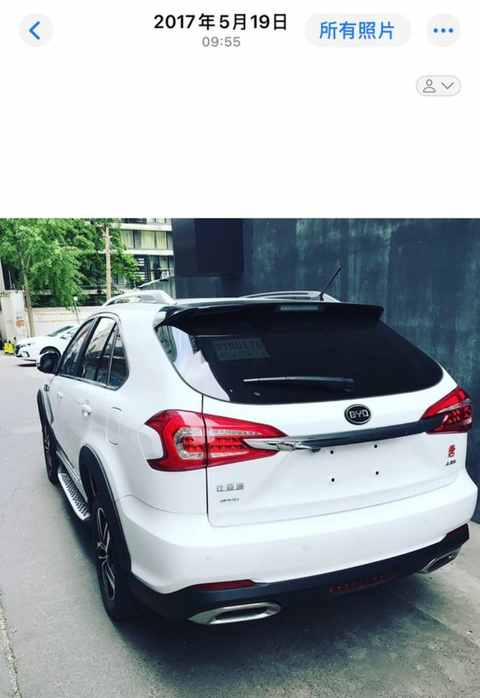
只去了一家 4S 店，试驾了一次，没有认真看其他车型，也没有把自己的长期用车场景梳理清楚。现在想想，多少有点冲动消费。
当然，结果不算差。
那辆比亚迪唐开了 7 年，也让我成为了比较早的一批新能源车主。插混在那个阶段给我的最大感受是：踏实。
可油可电，短途用电，长途用油，不用太担心补能。对第一次接触新能源的人来说，插混确实是一种很友好的过渡方案。
第二次换车，我变得谨慎多了
到 2024 年年底换车时，我的状态和 2017 年完全不一样。
这次我没有只去一家店，也没有试驾一次就下单。
在换车前一年多的时间里，我陆续试驾了 11 款自主品牌新能源车。看过小鹏、蔚来、极氪等车型，也把自己的需求重新梳理了一遍。
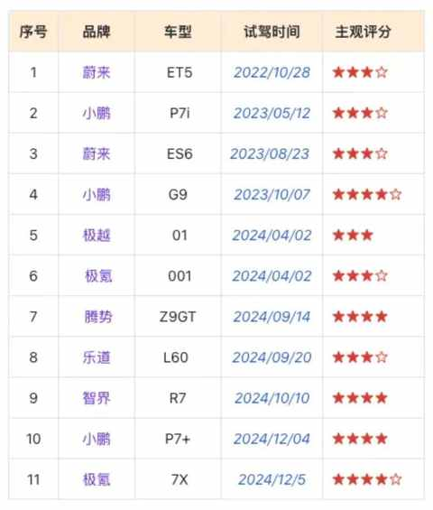
这次我很清楚自己要什么：
- 家庭唯一用车；
- 主要是我开，老婆偶尔开；
- 后排主要坐孩子；
- 日常要接送孩子、通勤、周末短途；
- 节假日会有长途和返乡；
- 希望补能简单，不想每天为车操心；
- 空间、舒适、辅助驾驶、用车成本都要兼顾。
最后选择了极氪 7X， 有意思的是，极氪 7X 反而是我试驾最晚的一款车。
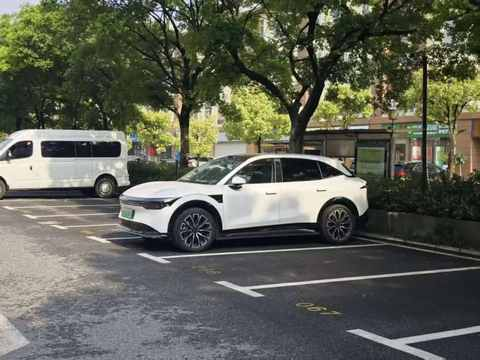
这和第一次买唐的时候完全不同。第一次更像是“遇到问题，赶紧买一辆车解决”；第二次则是先把需求和场景想清楚，再去判断哪辆车更适合。
所以现在有人问我人生第一台新能源怎么选，我不会直接说买纯电、插混还是增程。
我更想先问：
你的车主要用在哪些场景里？
现在选车，既容易又难
现在买车的过程，其实很容易。
看车、试驾、下订、付款、提车，流程越来越标准，金融方案也很多，销售服务也越来越成熟。
真正难的是做选择，2026 年到现在，国内已经发布了 500 多款车型。对普通用户来说，即便只看符合预算和基本需求的车，少说也能筛出 5-10 款。
选择变多，本来是好事，但选择太多之后，也会带来新的成本。
你要看纯电、插混、增程；要看续航、电池、智驾、空间、品牌、售后；还要看保险、保养、充电、家用场景、长途体验。
如果再刷短视频和车评，很容易越看越乱。
所以我觉得，人生第一台新能源不要一上来就看参数，也不要先被“油车稳”“合资省心”“新能源保值差”这些旧话术带走。
更不要被冰箱、彩电、大沙发、智驾这些宣传词直接带走。
先把自己的生活场景摊开看，会更实际。
我自己的经验也是这样。2017 年买唐的时候，我更多是在解决“家里必须有一辆车”的问题；2024 年换极氪 7X 的时候，我才真正开始按场景选车。
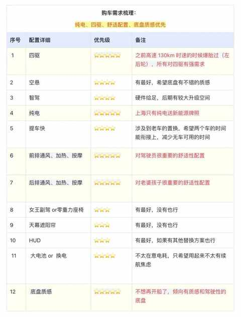
第一，看你有没有稳定补能条件
如果只看一个条件，我会先看补能。
不是续航，不是百公里电耗，也不是电池容量，而是：你日常能不能方便补能。
当下有家充，和没有家充，也会造成纯电体验的差别，不过随着快充桩的增多，两种体验的差别会越来越小。
我从插混换到纯电后，最明显的变化就是：以前还会关心油耗、电耗、混动模式怎么用，换成后来的补能方式就剩一个充电，日常用车反而简单了很多。
电不够了就充，够用就继续开。
不是说不能买纯电，而是你的体验会更依赖公共充电环境。家附近、公司附近、常去商圈、常跑路线有没有稳定充电桩，都要提前想清楚。
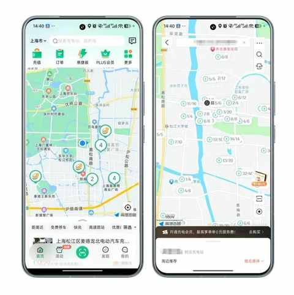
所以我的建议很简单：
有家充、通勤为主，纯电可以优先考虑。 没有家充、补能不稳定，插混或增程可能更稳。
第二，看你的日常通勤半径
很多人买新能源时，很容易盯着续航数字看。
500 公里够不够？600 公里是不是更稳？要不要 800V？要不要 100 度大电池？
这些都可以看，但更重要的是：你每天到底开多少公里？
如果日常只是上下班、接送孩子、买菜、周末短途，今天很多新能源车的续航已经完全够用。
这个时候，真正影响体验的反而不是续航上限，而是车开起来顺不顺、坐着舒不舒服、补能方不方便、车机和辅助驾驶是不是好用。
我以前也很在意续航数字，会不由自主的关注能耗表现和续航里程。
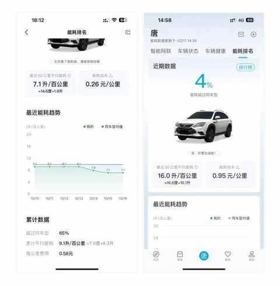
但开久了之后会发现，日常用车中真正让人放松的，不是某一次极限续航跑了多远，而是大多数时候都不用为车操心。
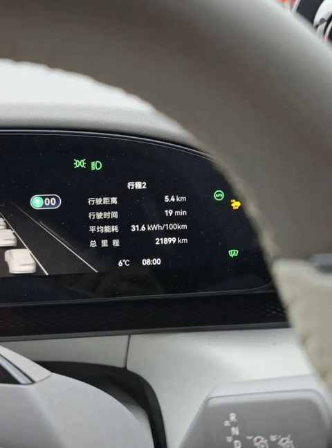
去年冬天，有一天早上送娃上学的时候，空调开的比较大，平均能耗都上了30+，我反而是会心一笑，感慨极氪对能耗的真实呈现。
但如果你经常跨城，或者每周都有长距离高速，那就一定要慎重。
这时候要看的不是CLTC续航，而是高速能耗、冬天表现、补能速度、沿途充电网络，以及你愿不愿意分出一些精力来为补能做点规划。
第三，看你是不是经常长途
纯电车能不能跑长途？
当然能。
我开纯电跑过多次超1000km的长途，也经历过两次春运，我的感受是：
纯电长途焦虑不只是续航问题，更多是路线、时间、补能和家人情绪管理。
一个人开长途，和带着家人孩子开长途，是两种完全不同的体验。
一个人开，晚一点充电、绕一点路、服务区多停一会儿，都可以接受。但家人在车上，尤其孩子在车上，你就不能只考虑车能不能到，还要考虑大家累不累、饿不饿、想不想上厕所、服务区体验怎么样。
油车的长途补能更自由，几分钟加完油就走。
纯电长途则更适合把充电和休息、吃饭、上厕所结合起来。规划做得好，体验并不差；规划做得不好，就容易焦虑。
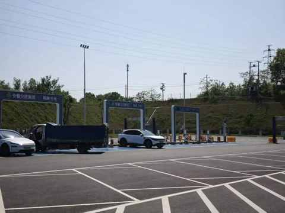
如果你一年只跑几次长途，日常主要城市通勤，纯电依然很合适。
如果你频繁跨省长途，而且不想为补能做任何规划，那插混或增程会更轻松。
不是纯电不行，而是你要问自己：
我愿不愿意把“补能规划”纳入长途用车的一部分？
第四，看家庭成员和空间需求
第一台车如果是家庭唯一用车，千万不要只看自己。
很多人买车时容易被屏幕、冰箱、彩电、智驾、加速成绩吸引。这些不是没价值，但家庭用车真正高频的场景，往往很琐碎。
孩子上下车方不方便？ 后排坐得舒不舒服？ 老人会不会晕车？ 后备箱能不能放下婴儿车、书包、折叠椅、露营箱？ 儿童座椅装上后，其他座位还好不好坐？
我开极氪 7X 后越来越明显地感觉到，家庭用车不是一次自驾游决定的，而是每天重复的小场景决定的，例如 我这辆极氪 7X 唯一的选装，就是后排沙发。不是因为试驾时觉得高级，而是因为后排长期坐的是孩子和家人。腿托、靠背调节、通风和加热，对我来说比零百加速快零点几秒更有价值。
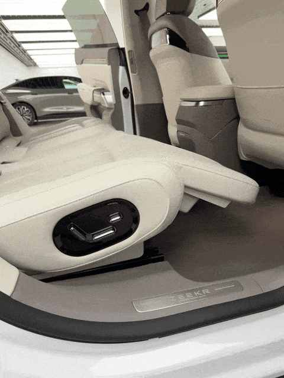
车是一个移动空间，也是家庭共享空间。所以家庭第一台新能源，我建议优先看：
空间、安全、舒适、补能和日常使用的便利性。
炫酷的功能可以加分，但不要让它们成为主要决策因素。
第五，看品牌、售后和真实使用成本
第一台新能源还有一个很现实的问题：品牌能不能长期稳定，售后网点是否方便，三电质保是否清楚，保险费用能不能接受。
很多人谈新能源成本，只谈电费，很不完整！ 所以纯电车是不是省钱，不能只拿电费和油费比。
我的极氪 7X 开到 3 万多公里后，我的充电费用一共约 4076 元，平均每公里约 0.13 元；但两年保险超过 1.4 万元，高速费用也超过了 7000 元。
所以，我更确定一件事：
纯电车省的是能耗，但总账要看保险、高速、家充和用车频率。
如果你一年只开几千公里，纯电的低能耗优势未必能覆盖其他成本和折旧波动。但如果你开得比较多，比如两万公里以上，那新能源的成本优势就会更明显。
第一台车不能只看配置表。品牌是否稳定、售后是否方便、出现问题后能不能及时解决，对长期用车更重要。
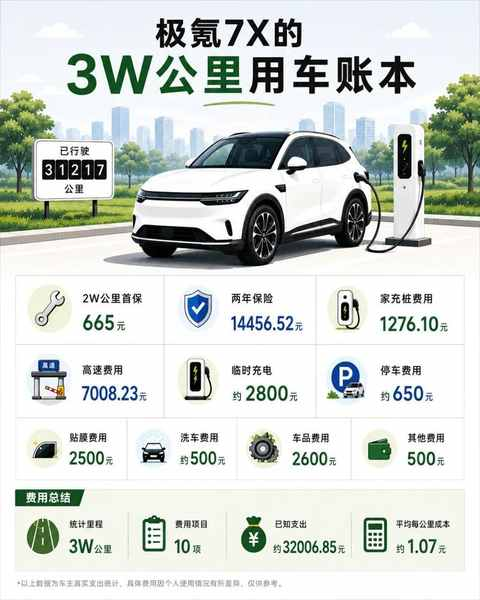
极氪7X开到3万公里，保养、充电、保险一共花了多少钱
纯电、插混、增程怎么选？
如果简单总结，我会这样看。
有家充，日常通勤为主，长途频率不高：优先看纯电。
纯电的日常体验很直接：安静、平顺、动力响应快、使用成本低，城市代步和家庭通勤会比较舒服。
没有家充，经常长途，或者对补能很焦虑：优先看插混或增程。
插混和增程的优势不是一定更先进，而是给人更强的安全感。尤其对第一台车来说，这种安全感很重要。
预算有限，更要看可靠品牌和售后。
不要只被配置堆料吸引。第一台车买来是长期用的，不是只看发布会和试驾时那半小时的新鲜感。
家庭唯一用车，空间和补能优先级要提高。
车是给全家用的，不应只满足驾驶者一个人，理应把全家人的需求都考虑到。
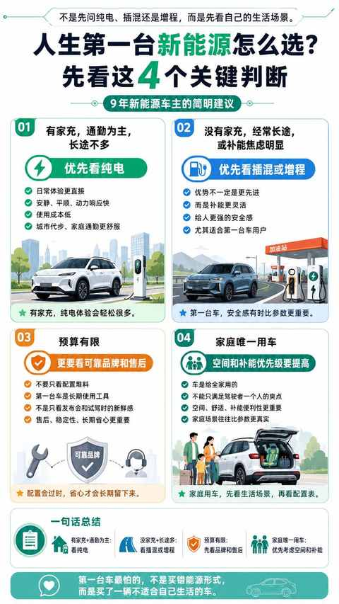
最后
我并不认为所有人都该买新能源，也不认为油车已经没有价值。
如果你所在区域充电条件差，经常跑长途，预算有限且非常在意后期维修便利，油车仍然可以是一个合理选择。
但我也不认同那种 “第一台车就该买油车”、“合资老三样最稳”、“新能源都是玩具”的论调， 今天的市场早已经变了。
新能源车已经不是少数人尝鲜的东西，而是普通家庭考虑的主流选项。
所以，人生第一台新能源怎么选？
我的建议不是先看参数，而是先看 5 个场景：
有没有稳定补能条件； 日常通勤半径多长； 长途频率高不高； 家庭成员和空间需求是什么； 品牌、售后和真实总成本能不能接受。
如果这 5 个问题想清楚了，纯电、插混、增程该怎么选，其实会清楚很多。
第一台车最怕的，不是买错油车还是新能源，真正怕的是：
你买了一辆别人都说正确，但不适合你生活和用车场景的车。
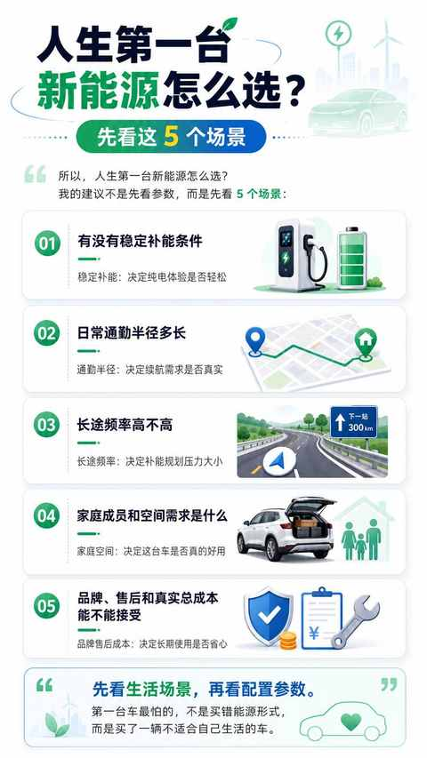